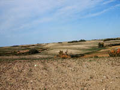
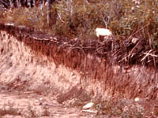

|
|
|
| Early scientists, beginning with the great Russian pedologist Dokuchaev in about 1885, recognized soil as a product of the environment. The action of weathering and biological activity on surface deposits eventually led to the formation of a soil profile. The kind of soil profile that developed was thought to be the result of six natural factors acting together: parent material, climate, vegetation, topography, time and man. In many instances only one or two factors dominate allowing us to understand and classify soils more easily. | |||
 1. Parent Material Parent material refers to the surface deposits which have undergone weathering to produce the soil present in Saskatchewan today. Through the weathering process, parent material has been broken down, moved, sorted and deposited. The type of soil that has developed was, in large part, determined by the origin and type of parent material. In Saskatchewan, much of the starting rock material was affected by the last glacial period. The glaciers began retreating approximately 10 000 years ago and considerable amounts of rocks, gravels, sands, silts and clays were laid down directly by the ice. Some of the same types of parent materials were carried and sorted by meltwaters flowing away from the ice masses. Even today, materials and sediments are carried and deposited by the rivers and streams in the province. Ponded lakes, such as Lake Agassiz, which covered a large portion of the province, produced additional sorting of materials. Clays are a result of the ponding effects of lakes. Ancient peat deposits and the compressed bodies of marine life which inhabited a variety of the inland seas which covered the province millions of years ago, make up organic parent material. The nature of the underlying parent material influences the characteristics of soil formation on the surface. Such characteristics include soil structure, texture, porosity, minerals present and water holding capacity. The form of the landscape is often a clue as to the type of soil parent material. A rolling landscape with eroded knolls and a stony surface is typical of glacial till deposits. Flatter landscapes with few stones are typical of lacustrine deposits. Can you guess what kind of parent material is in the image? | |||
The climatic characteristics which have the greatest influence on soil formation are temperature, precipitation and wind. Temperature - The effects of weathering and hence soil development may be increased with warmer temperatures and higher moisture levels. These conditions enhance chemical reactions such as hydrolysis and oxidation. Conversely, cooler temperatures and lower moisture amounts would slow down the effects of weathering. Think of soil development in terms of moisture effectiveness. To be effective in soil development the moisture must penetrate the soil to act on the parent material. If the temperature is too warm and there is only a little moisture which may evaporate from the soil surface when the wind blows then there is very little soil development. Conversely, cooler temperatures with more and frequent rainfall and low wind speeds allow more moisture to penetrate the soil profile and enhance soil development. Precipitation - The way water moves through soils is determined in part, by the distribution and amounts of moisture. The southern parts of the Province are frequently dry. The long term growing season precipitation from April through the middle of August is only 190-200mm. Some south western regions experience only 220 mm total annual precipitation which includes snow fall. In these areas of the Province, evaporation may exceed precipitation leading to a moisture deficit. The frequent windy conditions in southern areas also enhance evaporation. This results in upward (capillary) movement of water and dissolved salts through the soil, making the soil more saline which restricts crop growth. Evaporation of water on the surface causes the salts and minerals to be left behind. In some areas of the Province, salts are visible on the surface as white, crusty matter. Higher growing season precipitation of 250mm to 350 mm in the north eastern regions results in water moving downward through the soil. Both soluble and insoluble matter may be carried in the water. Leaching is the term for this downward movement of fine clays, organic matter, salts and minerals.
| |||
Vegetation is very important in soil formation from five main aspects. First it protects the soil from wind and water erosion. Second the roots of grasses and trees penetrate downwards to break up the parent material and add structure. Third plants provide organic mater which improves structure and the ability of the soil to hold moisture. Forth plants cycle nutrients that would otherwise be washed out of the profile. Five, plant roots provide a nutrient rich habitat for soil microorganisms often called the rhizosphere effect. Symbiotic relationships with bacteria and fungi help the plant obtain nutrients such as nitrogen and phosphorus. Within Saskatchewan vegetation and climate often act together so it is difficult to isolate the single effect of vegetation. In fact, the result of the combined effect of these two factors are the Soil Zones. Vegetation varies from the sparse grasslands of the Short Grass Prairie in the dry south west part of the province through the moister central agricultural regions which gives rise to taller and more dense grasses and finally to the relatively wetter regions to the north which allows the growth of mixed grasses and birch and aspen trees. Farther north still we have the boreal forest. Grasses cycle nutrients very effectively. Prairie grasses revive quickly in the spring. The developing root system can take advantage of snow meltwater. Under the still dormant trees, the melt water would wash nutrients out of the profile whereas grasses have the opportunity absorb them and combine them into their cells. This process eventually forms the brown and black soils which have thick fertile A horizons with high organic matter content. The parkland soils in contrast have thinner A horizons and more strongly leached profile and as a result are generally less fertile. | |||
 Saskatchewan has a varied topography. Travel in and around Regina and you will experience the flat prairie. A few kilometers to the northwest and experience the Qu' Appelle Valley. Go west to Cypress Hills and find elevations greater than anywhere else in the province. A trip north will allow you to see valleys around the Saskatchewan River Systems and even forested lands. The difference in relief is the reason for the various drainage patterns found in Saskatchewan and one of the reasons for the different soil characteristics. Consider the following:
The next time you are driving through the country, look at the landscape and if you are lucky you will pass by a road cut like this one at Blaine Lake. What do you see different in the soil profile moving down slope. | |||
It is obvious that the longer the soil forming processes have to act on the parent material the more development of the soil profile. Within our Province most of our soils have been forming since the glaciers retreated some 10,000 years ago. There are, however, recent soils that are now forming on the flood plains of small creeks and rivers or even the "blow dirt" in ditches or over spent city garbage dumps and mine spoils that have been buried. How do we recognize “old” soils? Under similar climate and topography, young soils would have more shallow, less defined horizons i.e. a shallow solum. | |||

The early scientists did not include man in the soil forming factors. Today we realize that man can profoundly affect soil development in both negative and positive ways. By good management, man can maintain or improve the soil. On the other hand man's profit motivation or lack of understanding can undo thousands of years of nature's handiwork. Erosion is the enemy of agricultural soils and careful management is needed just to keep our soils in production for the immediate future. Consider the consequences of simple tillage operations. Suppose a farmer continually ploughs the soil in a direction that is down the steep part of a slope; or summerfallows a steep slope; or pulls a cultivator through the soil at high speed under windy conditions. It is easy for man to degrade the soil but how easy is it to reclaim it?
|